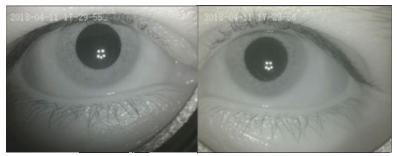
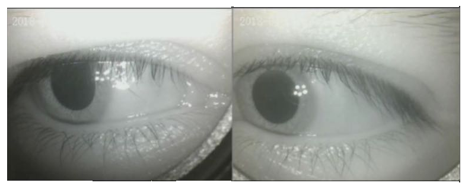

Los SG consisten en unas gafas que permiten la visualización y grabación de los movimientos oculares.
 Mejorar la precisión diagnóstica y el tratamiento posterior en casos de vértigo y/o mareo.
Establecer un protocolo clínico estandarizado para el abordaje y valoración del paciente.